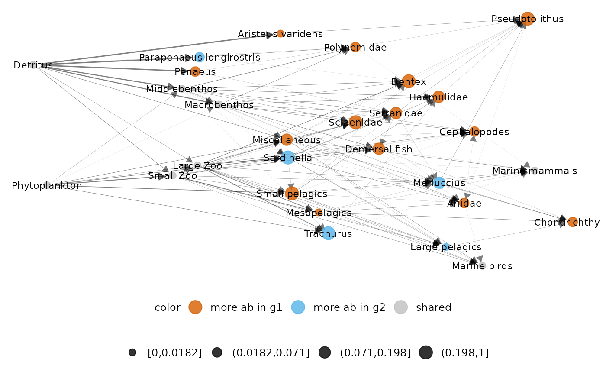

Function to represent difference between two networks belonging to a metanetwork with specific layout ('TL-tsne' or group 'TL-tsne') using either 'ggnet' or 'visNetwork' visualisation. This function represent the difference between g1 and g2 (g1-g2).
diff_plot(
metanetwork,
g1,
g2,
beta = 0.1,
mode = "TL-tsne",
vis_tool = "ggnet",
edge_thrs = NULL,
layout_metaweb = F,
flip_coords = F,
alpha_per_group = NULL,
alpha_per_node = NULL,
TL_tsne.config = TL_tsne.default,
nrep_ly = 1,
ggnet.config = ggnet.default,
visNetwork.config = visNetwork.default
)Arguments
- metanetwork
object of class 'metanetwork'
- g1
network (of class 'igraph') of metanetwork
- g2
network (of class 'igraph') of metanetwork
- beta
the diffusion parameter of the diffusion kernel, a positive scalar controlling the squeezing of the network
- mode
mode used for layout, either 'TL-tsne' or 'group-TL-tsne' (see
attach_layout()). Default is 'TL-tsne'- vis_tool
a character indicating the visualisation tool, either 'ggnet' or visNetwork
- edge_thrs
if non-null, a numeric (between 0 and 1) indicating an edge threshold for the representation
- layout_metaweb
a boolean indicating whether the layout of the metaweb should be used to represent the difference network. to use metaweb layout = T, you need first to compute 'TL-tsne' layout for the metaweb for this beta value using
attach_layout()- flip_coords
a boolean indicating whether coordinates should be flipped. In that case, y-axis is the trophic level and x-axis is the layout axis
- alpha_per_group
controlling alpha per group (only for 'ggnet' vis), a list of format
list(resolutions = "XX",groups = XX,alpha_focal = XX,alpha_hidden = XX), see example- alpha_per_node
controlling alpha per node (only for 'ggnet' vis), a list of format
list(nodes = XX,alpha_focal = XX,alpha_hidden = XX), see example- TL_tsne.config
configuration list for mode 'TL-tsne', default is TL_tsne.default
- nrep_ly
If several layouts for this beta value are attached to the metaweb (if
layout_metaweb = T), index of the layout to use, seeattach_layout()- ggnet.config
configuration list for ggnet representation, default is ggnet.default
- visNetwork.config
configuration list for visNetwork representation, default is visNetwork.default
Value
plot of the difference network, either using 'ggnet' or 'visNetwork'
See also
Examples
#on Angola dataset
library(igraph)
library(metanetwork)
data(meta_angola)
diff_plot(g1 = meta_angola$X2003,g2 = meta_angola$X1986,metanetwork = meta_angola,
beta = 0.05)
#> mode is TL-tsne
#> plotting: X2003_Species - X1986_Species
#> mode is TL-tsne
#> beta = 0.05
#> Epoch: Iteration #100 error is: 907.373467953451
#> Epoch: Iteration #200 error is: 217.108824309046
#> Epoch: Iteration #300 error is: 217.230105496708
#> Registered S3 method overwritten by 'GGally':
#> method from
#> +.gg ggplot2

#using visNetwork
## NOT RUN
#return htmlwidget
diff_plot(g1 = meta_angola$X2003,g2 = meta_angola$X1986,metanetwork = meta_angola,
beta = 0.05,vis_tool = "visNetwork")
#> mode is TL-tsne
#> plotting: X2003_Species - X1986_Species
#> beta = 0.05
#> Epoch: Iteration #100 error is: 907.373467955934
#> Epoch: Iteration #200 error is: 217.130710648407
#> Epoch: Iteration #300 error is: 217.255637346403
#> x_max = 1356.85756899361
#> y_max = 356.960649826536
## END NOT RUN
#computing and using metaweb layout for diffplot
meta_angola = attach_layout(meta_angola,beta = 0.1)
#> attaching TL-tsne layout for metaweb_Species
#>
#> beta = 0.1
#> beta = 0.1
#> Epoch: Iteration #100 error is: 838.971311061509
#> Epoch: Iteration #200 error is: 199.589209547711
#> Epoch: Iteration #300 error is: 199.589190200879
diff_plot(g1 = meta_angola$X2003,g2 = meta_angola$X1986,metanetwork = meta_angola,
beta = 0.1,layout_metaweb = TRUE)
#> mode is TL-tsne
#> plotting: X2003_Species - X1986_Species
#> mode is TL-tsne
 #using visNetwork
diff_plot(g1 = meta_angola$X2003,g2 = meta_angola$X1986,metanetwork = meta_angola,
beta = 0.1,layout_metaweb = TRUE,vis_tool = "visNetwork")
#> mode is TL-tsne
#> plotting: X2003_Species - X1986_Species
#> x_max = 1259.92651522773
#> y_max = 340.638960573765
##contrasting alpha
#per group
diff_plot(metanetwork = meta_angola,g1 = meta_angola$X2003,g2 = meta_angola$X1986,beta = 0.05,
alpha_per_group = list(resolution = "Phylum",groups = c("Fish"),
alpha_focal = 0.01,alpha_hidden = 0.8))
#> mode is TL-tsne
#> plotting: X2003_Species - X1986_Species
#> mode is TL-tsne
#> beta = 0.05
#> Epoch: Iteration #100 error is: 907.373467959542
#> Epoch: Iteration #200 error is: 217.139449639585
#> Epoch: Iteration #300 error is: 217.267629080211
#using visNetwork
diff_plot(g1 = meta_angola$X2003,g2 = meta_angola$X1986,metanetwork = meta_angola,
beta = 0.1,layout_metaweb = TRUE,vis_tool = "visNetwork")
#> mode is TL-tsne
#> plotting: X2003_Species - X1986_Species
#> x_max = 1259.92651522773
#> y_max = 340.638960573765
##contrasting alpha
#per group
diff_plot(metanetwork = meta_angola,g1 = meta_angola$X2003,g2 = meta_angola$X1986,beta = 0.05,
alpha_per_group = list(resolution = "Phylum",groups = c("Fish"),
alpha_focal = 0.01,alpha_hidden = 0.8))
#> mode is TL-tsne
#> plotting: X2003_Species - X1986_Species
#> mode is TL-tsne
#> beta = 0.05
#> Epoch: Iteration #100 error is: 907.373467959542
#> Epoch: Iteration #200 error is: 217.139449639585
#> Epoch: Iteration #300 error is: 217.267629080211
 #per node
diff_plot(metanetwork = meta_angola,g1 = meta_angola$X2003,g2 = meta_angola$X1986,beta = 0.05,
alpha_per_node = list(nodes = c("Detritus","Phytoplankton"),
alpha_focal = 0.01,alpha_hidden = 0.8))
#> mode is TL-tsne
#> plotting: X2003_Species - X1986_Species
#> mode is TL-tsne
#> beta = 0.05
#> Epoch: Iteration #100 error is: 907.373467950668
#> Epoch: Iteration #200 error is: 217.113609987538
#> Epoch: Iteration #300 error is: 217.233468491867
#per node
diff_plot(metanetwork = meta_angola,g1 = meta_angola$X2003,g2 = meta_angola$X1986,beta = 0.05,
alpha_per_node = list(nodes = c("Detritus","Phytoplankton"),
alpha_focal = 0.01,alpha_hidden = 0.8))
#> mode is TL-tsne
#> plotting: X2003_Species - X1986_Species
#> mode is TL-tsne
#> beta = 0.05
#> Epoch: Iteration #100 error is: 907.373467950668
#> Epoch: Iteration #200 error is: 217.113609987538
#> Epoch: Iteration #300 error is: 217.233468491867